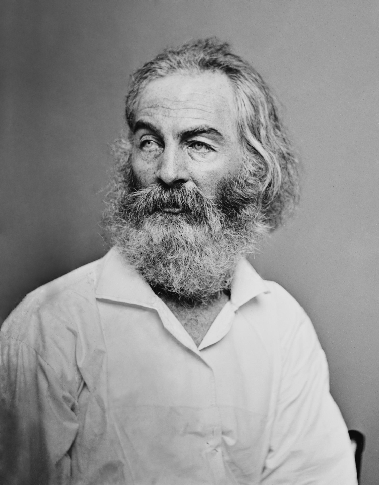

16. 联结差异的美国社会，催生出了何种语言与文学？
大家好，我是杨照。
民主的社会不讲究细节
托克维尔在《论美国的民主》下卷当中，他要追问，一个平等民主的社会会产生一些什么样的效应？其中也就包括了会有什么样的集体生活哲学吗？在集体思想上又有什么样的特色？除了前面跟大家提到、介绍过的民主平等的社会会比较实际、实用，另外还有什么和贵族社会有不一样的精神？
贵族社会讲究“差异”，相对地，平等、民主社会当然就重视“一般”。一个是求异的社会，另外一个是求同的社会。影响所及，平等、民主社会习惯于联结，将各式各样的人联系在一起，找出他们之间的共同性；也将各式各样的现象联系在一起，一样去找出它们之间的共同性来。从中间产生出普遍方法与一般道理。
贵族制社会中，人会不自觉地以分别的眼光来看这个世界，去建立这个世界的分类，分类就变成了认知的开端。分门别类，然后一一地去穷究每一件事情、每一个现象个别的道理。这事实上也就是基础科学的研究路径与研究的方法。
但美国人不是这样看世界的，托克维尔告诉我们，在框架被打破了的社会，虽然仍然存在人与人之间的差异，但差异性却不会像在欧洲那么样的明显、突出。连带地，现象之间的差异也被淡化了。许多欧洲人眼中看到明明很不一样、绝对不会被放在一起的现象，在美国却被牵连在一起，看出其间的互通道理。美国人习惯看见相似性（similarities），习惯于将稍微相似的东西放在一起，透过普遍原则，而不是个别原则，来理解这个世界。
托克维尔认为：平等、民主的社会不会那么讲究差异，也就不会那么讲究细节。他提出的示范证据是语言——比对英国人和美国人使用的英语。托克维尔已经有了语言是思考工具的概念，人如何说话就直接反映、也直接影响他如何思考，脑袋里有什么样语言，人就怎么思考。人无法离开语言来进行思考，因而脑中有了一些什么样的语汇、用什么样的文法，也就决定了一个人能想什么、不能想什么。
所以不要停留在表面的层次看语言，不管是原生的母语，或者是后来学习的外语。我们怎么说话，我们被教育怎样说话是对的、怎样说话是好的，扩充这一部分的说话方式与说话能力，也就影响了我们心底的根本价值观。透过语言，某种逻辑、某种道理容易被你接受，你也有比较丰富的资源来进行思考；相对地，另外的语言道理，你就无法进入、无法领会、也甚至无从思考起了。这实际上也就决定了我们人生的基本模式原则。
沿着托克维尔这样的一种分析，大家也可以稍微看待一下自己所使用的语言。或者如果你有机会，你可以去比对一下你所知道的不一样的人，他们所使用的语言是如何影响他们的世界观的？你的语言和你的世界观之间如何联系在一起？包括我们刚刚讲到了，例如说，看到类似或者是看到差异，你的经验、体会又是什么呢？如果有任何的想法，非常欢迎写在留言当中一起来讨论。
从这里我们延伸可以明白，学习外语最大的意义，应该就在于能够增加我们的思考工具，进而开拓我们的思考范围。如果多学了一种语言，尤其是吸收那个语言中丰富的语汇、深入内化它不同的文法规律，就自然能够让我们感受更多，也能够让我们思考更多。
学习外语，你的经验又是什么？学习外语有没有给你什么样开拓体验、感受的收获？如果有，也非常欢迎您能够在留言当中告诉我们。
模糊与膨胀的美式英语
思考和说话是分不开的一体两面。我们不可能单纯训练思想，因为如果没有对的语言工具，思想也就无从形成；倒过来，我们也不可能单纯地去训练说话，如果没有那样的一种思考的底子，人就是说不出那样的话来。
1830年代距今将近两百年，托克维尔就有了语言与思想关系紧密的洞见。他分析一般的英语、英国人说的英语和美国人所说的美式英语（American English），从中看出美国人不一样的思想逻辑、不一样的思考方式。
他发现，英语到了美国之后，增加了很多变化，而且其中很多是“非功能性”的变化。也就是说，并不是因为到了新环境，为了要描述新现象、讨论新事物，所以在语言中增添了新的部分。非功能性的变化，可以说是为变化而变化。也就是不改变明明也不会怎样，但在美国那样的一个社会中，就发生了改变。
英国人到美国听美国人说话，常常会觉得莫名其妙。一句话明明在英式英语里有现成的、好好的说法，美国人偏偏不用，要改成自己的说法。而且这里的人这样说，那里的人也不愿意用同样方法说，坚持要有自己不一样的改法。改过的美式英语实在找不出什么比原来的英式英语要好的地方。
在运用语言上，美国人因为平等、自由，所以就产生了高度的歧异性，他们没有英国社会的那种语言纪律。十个英国人说话的时候，用到integrity（正直）这个词，如果你耐心地请他们解释integrity到底意味着什么，十个人说的大致都一样，不会差到哪里去。但在美国就不一样了，十个人讲integrity，十个脑袋里有十种各自的想法。用的是同一个字，但这个字的字义却可能高度歧异化了。
一个平等、民主的社会当中，语言会变得越来越芜杂，一直在变化。每隔一天就产生旧词的新意义，每隔一个礼拜就产生了新的词汇，每隔一个月就产生了一种新的语法……语言一直不断地在膨胀，就使得语言也就越来越不精确，人与人之间的沟通也就越来越困难。话很多，但相对地，产生的沟通效果却越来越小。
我年轻的时候，第一次读《论美国的民主》，对这段话几乎没有留下任何的印象，但是重读的时候却大有感触。可以跟大家分享一下，因为二、三十年间，我所处的台湾社会就发生了在平等和民主上的大变化。语言、文字有它的集体规律，有它建立、养成规律的机制。然而平等、民主的其中一个效果就是固定的典范消失了。原先每个人必须要读、必须要学习的语言文字范本也不见了，或者，就算原来的范本还在，其规范的强度也大幅地减弱了。
在一个平等、民主的社会里，有谁来告诉你什么东西是非读、非学不可的？谁有资格讲这个话？又有多少人会继续听、继续遵守呢？在这种状况下，原本的语言纪律当然就非下降不可了。
美国是个没有文学的地方？
这种现象一百多年前就在美国出现了。用托克维尔的话来说：每一代美国人都是新鲜人（new people），甚至都是新品种的人，他们不会觉得一定要去读旧品种的人觉得非读不可的典范。每一代都持续在变化，也就没有了真正具备约束力量的正典（canon），没有正典，也就没有了内化的一致语言规律、规则，也就没有了语言文字运用上的讲究，就没有过去在欧洲那种精确、讲究的语言、文字与文学。
所以托克维尔他在明白说：美国是个没有文学的地方，至少没有欧洲人所认定的那种文学。而且美国没有文学这不是偶然的，是平等、民主政治结构底下所造成的社会必然。
托克维尔又解释了什么是欧洲人认定的文学。这种文学有着文字形式上的讲究，以精致仔细的方式写出来的，是给有大量闲暇的少数精英分子慢慢品尝的。在美国，既然没有了这种具备拥有大量闲暇与精致品味条件的阶层，也就不会有这样的文学。
当然，托克维尔对他自己的推论，有一个小小的保留：美国不见得会完全没有文学，但就算美国有了文学，也不会是欧洲的那种文学。美国最有可能产生的文学是可以商品化的文学，用今天的语言说，那就是会产生“畅销书”。那是什么样的作品？托克维尔说得很直接、很简洁，那就是“每一个人都会去看、每一个人都看不起”的作品。托克维尔觉得这样的作品恐怕就是美国文学的未来。
托克维尔的论点有它的事实基础。到他写作时，美国建国了六十年，但迟迟没有出现像样的文学作品，所以从欧洲人的高度看去，美国是文学沙漠，没有产生出任何值得一读的作品。
不过从历史上看，托克维尔的这项预言也是错的。美国并没有成为一个缺乏文学、完全不懂得欣赏文学、无能产生杰出文学作品的社会。只是美国的文学起步较晚，要到十九世纪末、二十世纪才真正大放异彩。
但在一个意义上，托克维尔也是对的，美国的文学杰作，果然和欧洲原有的文学杰作大相径庭，是另外一回事。二十世纪美国文学拥有越来越高的地位，一部分原因，就在于全世界、包括欧洲，都朝向平等、民主的方向进展了，平等、民主的社会当然也就不可能维持原来旧有的文学形式、文学品味，就会出现另外一种不一样的文学。
有趣的是，说明完了美国没有文学的现象之后，托克维尔又另辟一章谈诗（poetry）。他先定义什么叫做诗，他对诗的定义在那个时代是很先进的。他主张，押不押韵不是判断诗最重要的标准，重要的是“诗以现实材料去描写理想境界”。尽管文字描写的是现实世界，不是神话、不是天堂地狱，但诗的目的不在于转述、传达现实中已经存在的，而是要去创造、刻画现实当中所缺乏的，高于现实、超越现实的东西。
这样的诗，在美国又会如何？托克维尔的一个结论是我们完全可以预期的——诗应该很难在美国发展。平等带来现实，人人追求现下眼前可以摸得到、抓得到、享受得到的东西，那要如何出现“诗的冲动”？要如何产生超越现实、打造理想的冲动？所以诗在这个社会里就不会太重要。
然而话锋一转，托克维尔接着说：在这种不断变化的社会里，会有另外的一种渴望、冲动（urge），刺激美国人去写另外一种诗，那是欧洲所没有，或就算欧洲有，也不受重视的另外一种诗，却可能在美国成为主流。
如果将来有优秀、杰出的“美国诗”，那么它的内容最有可能是描写不动的、不变的自然。因为美国人活在快速变动的社会环境里，以变动为其生活基本假设前提，所以“变化”就成了诗要去超越的核心现实、诗要彰显的理想。于是就可以透过相对不变的、变动极其缓慢的大自然来予以表现。

沃尔特·惠特曼（Walt Whitman，1819-1892），美国诗人、散文家、新闻工作者及人文主义者，代表作《草叶集》
在惠特曼（Walt Whitman）出现之前，托克维尔就如此正确地预言了。的确，美国的诗，进而美国的哲学，最重要的发展就出现在与大自然的结合、对于大自然的观察与思考上。广义的诗，poetry and poetics（诗与诗学），是朝向大自然走的，例如说写《瓦尔登湖》的梭罗、他的好朋友哲学家爱默生等人，他们作为代表，他们亲近自然、崇拜自然，发展出了结合宗教、哲学与美学的“超越主义”（transcendentalism）。这是美国思想的一大潮流，而它的的确确是以不变的大自然作为核心价值的来源。
感谢您的收听，我们下次再会。